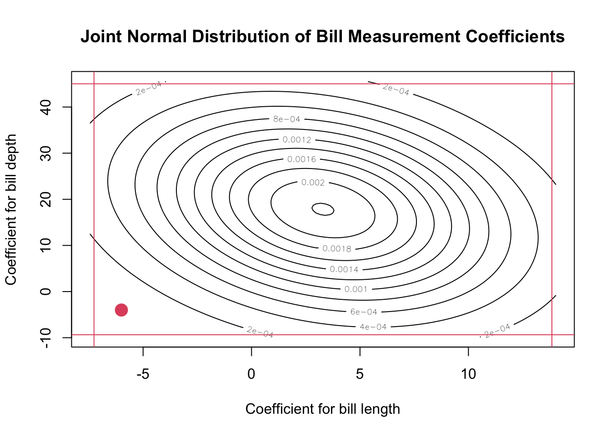

Then the Extra Sum of Squares is defined as: \[
SS(\hat\beta_3 | \hat\beta_0, \hat\beta_1, \hat\beta_2) = S_1 - S_2
\] where \(S_1\) is \(SS_{Reg}\) for M1, similar for \(S_2\).
Convince yourself that \(S_1 \ge S_2\).
Special Case: Corrected Sum-of-Squares
We’ve already seen this notation: \[
SSReg(\hat\beta_0) = n\bar{\underline y}^2
\] and \[
SS_{Reg}(corrected) = SS_{Reg}(\hat\beta_1, ..., \hat\beta_{p-1}|\hat\beta_0)= \hat{\underline\beta}^TX^T\underline y - n\bar{\underline y}^2
\] which can be written as \(SS_{Reg}(corrected) = S_1 - S_2\) where \(S_2\) is the sum-of-squares for the null model!
Unspecial Case: Correction doesn’t matter!
Consider \(S_{1c}\) and \(S_{2c}\), the corrected versions of \(S_1\) and \(S_2\). In symbols: \[
S_{1c} = SS_{Reg}(\hat\beta_1,\hat\beta_2,\hat\beta_3 | \hat\beta_0)\text{ and }S_{1} = SS_{Reg}(\hat\beta_0,\hat\beta_1,\hat\beta_2,\hat\beta_3)
\] Then \[\begin{align*}
S_{1c} - S_{2c} = (S_2 - n\bar{\underline y}^2) - (S_1 - n\bar{\underline y}^2) = S_1 - S_2
\end{align*}\]
In other words, the correction term doesn’t matter.
This is useful because R outputs the corrected versions.
Unspecial Case: SSReg versus SSE doesn’t matter!
Consider \(SSE_1\) and \(SSE_2\). Since \(SST\) is the same for both models,
Note that it doesn’t matter which is nested: \(S_1 - S_2\) has the same sign as \(p-q\), so the F-statistic always positive.
The df in F requires an absolute value.
The Big Idea: Omnibus Tests for Multiple Predictors
Suppose we want to test if any bill measurement is useful.
Bill length and depth are highly correlated - marginal CIs won’t be valid.
Confidence Regions are hard (and only work in 2D)
To provide a little bit more context, we’re going to consider the actual covariance of the predictors! Recall that the variance covariance matrix for \(\hat{\underline\beta}\) (i.e. the variance of the joint sampling distribution) is defined as \(V(\hat{\underline\beta}) = \sigma^2(X^TX)^{-1}\).
We can see that there’s a lot of covariance going on in our data~ We’ll focus on bill length and bill depth for now. The code below is not testable.
Show the code
library(mvtnorm)beta_length <-coef(mylm)["bill_length_mm"]beta_depth <-coef(mylm)["bill_depth_mm"]se_length <-summary(mylm)$coef["bill_length_mm", "Std. Error"]se_depth <-summary(mylm)$coef["bill_depth_mm", "Std. Error"]var_bills <- var_beta[3:4, 3:4]x <-seq(beta_length -2* se_length, beta_length +2*se_length,length.out =100)y <-seq(beta_depth -2* se_depth, beta_depth +2* se_depth,length.out =100)z <-outer(x, y, function(xi, yi) dmvnorm(cbind(xi, yi), mean =c(beta_length, beta_depth),sigma = var_bills))contour(x, y, z, main ="Joint Normal Distribution of Bill Measurement Coefficients",xlab ="Coefficient for bill length",ylab ="Coefficient for bill depth")confints <-confint(mylm)abline(v = confints["bill_length_mm",], col =2)abline(h = confints["bill_depth_mm",], col =2)points(x =-6, y =-4, pch =16, cex =2, col =2)

The plot above shows the estimated sampling distribution for the Bill Length and Bill Depth coefficients (this is similar to the normal distribution that we use for the sample mean, but it’s in two dimensions now and we have to deal with the correlation of the coefficients). Since the coefficients are correlated, we get an elliptical region.
I’ve also added the “marginal” confidence intervals; that is, the confidence intervals you get if you only consider the coefficient for bill depth. There’s a red dot at (-6, -4), which represents the joint hypothesis \(\beta_3 = -6\) and \(\beta_4 = 4\) (that is, the hypothesis that both of these are true at the same time). If we simply test the hypothesis that \(\beta_3 = -6\), we are well within the confidence limits. If we just test the hypothesis that \(\beta_4 = -4\), we’re also within those confidence limits. However, the contour plot above shows that this is actually not a reasonable value - it’s far in the tail of the joint distribution! The marginal confidence intervals don’t tell the whole story.
Instead, we can use the ESS to test for a subset of predictors!
Is the car’s “power” important for the regression?
Is the car’s “size” important?
Are hp and wt enough to model the mpg of a car?
Solutions:
Show the code
anova(M1, update(M1, ~ . - hp - qsec - drat)) # At least one is important!
Analysis of Variance Table
Model 1: mpg ~ disp + hp + drat + wt + qsec
Model 2: mpg ~ disp + wt
Res.Df RSS Df Sum of Sq F Pr(>F)
1 26 170.13
2 29 246.68 -3 -76.553 3.8998 0.02 *
---
Signif. codes: 0 '***' 0.001 '**' 0.01 '*' 0.05 '.' 0.1 ' ' 1
Show the code
anova(M1, update(M1, ~ . - wt - disp)) # At least one is important!
Analysis of Variance Table
Model 1: mpg ~ disp + hp + drat + wt + qsec
Model 2: mpg ~ hp + drat + qsec
Res.Df RSS Df Sum of Sq F Pr(>F)
1 26 170.13
2 28 287.99 -2 -117.86 9.0057 0.001067 **
---
Signif. codes: 0 '***' 0.001 '**' 0.01 '*' 0.05 '.' 0.1 ' ' 1
Show the code
anova(M1, lm(mpg ~ hp + wt, data = mtcars)) # None are important!
Analysis of Variance Table
Model 1: mpg ~ disp + hp + drat + wt + qsec
Model 2: mpg ~ hp + wt
Res.Df RSS Df Sum of Sq F Pr(>F)
1 26 170.13
2 29 195.05 -3 -24.919 1.2694 0.3055
Of course, this raises more questions: If “at least one is important”, then which is it?
We’re slowly getting into the “art” territory of regression. The choice of which predictors to include is never going to have a right answer. If someone is trying to decide how heavy of a car to make, they probably want wt in the model no matter what. If the Ministry of Transportation wants to predict the mpg based on things that are easy to measure, we might choose the predictors that are easiest to measure.
We should not just check a whole bunch of p-values! A recurring and important theme in this class is that Type 1 error is a monster! The whole point of ESS (including overall F-tests) is that we can check a bunch of things all at once without having to calculate a bunch of p-values!
Next time
When to check ESS
How to check all ESS
What is R’s anova() function even doing???
6.3 Exercises
Suggested Ch06 textbook exercises: A, D.
Explain why \(SS_{Reg}\) is always larger when predictors are added. (That is, if \(M1\) is nested within \(M2\), then \(SS_{Reg}\) for \(M2\) will be larger).
Simulate a data set with 10 predictors, where only 5 of them have a non-zero coefficient. Show that an ESS test can detect this, even if some of the parameters with a 0 coefficient have a significant p-value (Type 1 error).
Demonstrate that \(\hat\beta_1\) in the model \(y_i = \beta_0 + \beta_1\) is different \(y_i = \beta_0 + \beta_1 + \beta_2\). Demonstrate this across any data we’ve seen before, new data, simulated data, or whatever you want!
Why does the estimate of one parameter change when you add other estimates? (Hint: see the bill length and bill depth example here in the course notes.)